Tried beforeMissed
A system built by an outside company
SHL had invested in a design system from an external agency.
- What went wrong
- It had a lot of misses. Built away from the product, it didn't fit how SHL's teams actually worked.
Talent Management Design System · SHL
SHL's hiring workflow ran across five legacy products, each with its own front end. I owned the design system that replaced them: I measured the fragmentation, set the documentation standard, and ran the review of every component five squads built into it.
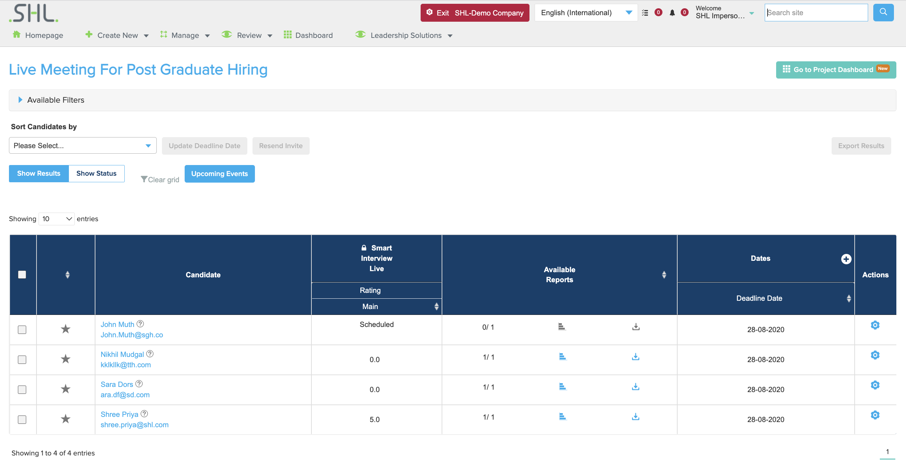
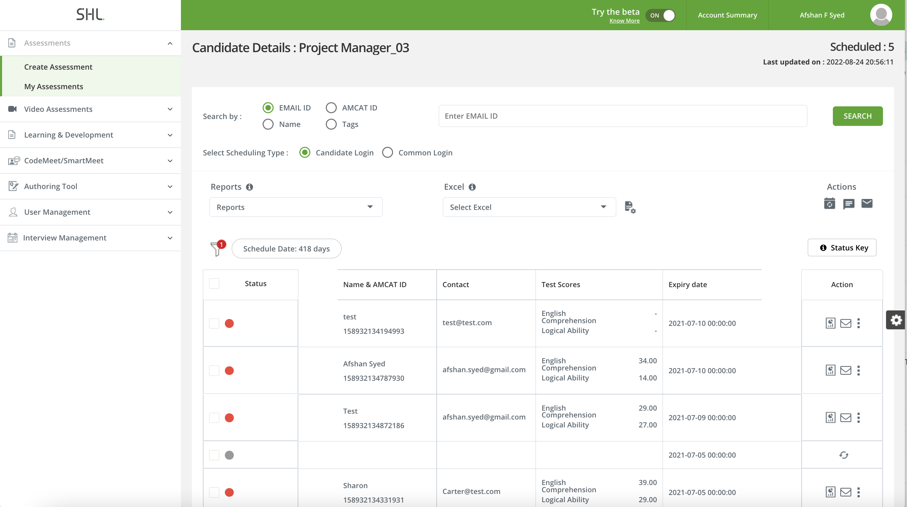
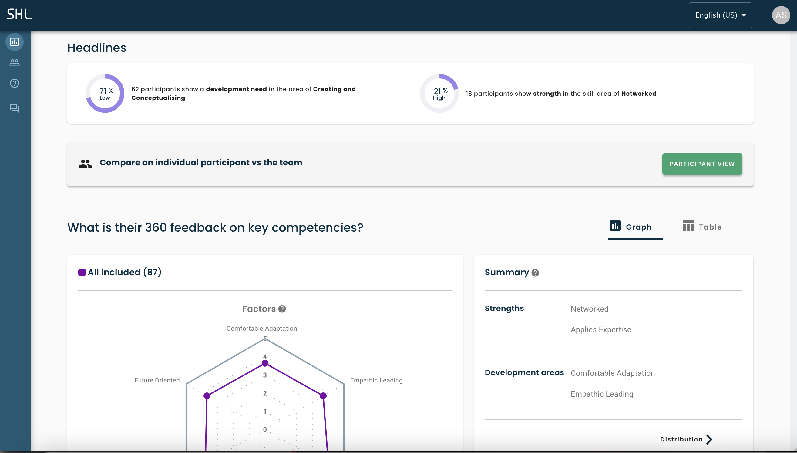
Four of the five legacy products. None of them agree on how a table, a button or a chart should look.
One hiring workflow crossed several products that looked and behaved nothing alike. In customer feedback, some users said it felt like landing on a different company's site, and every team rebuilt the same patterns from scratch.
Owned the system on the design side. Audited 117 UI patterns to size the gap, created the five-doc standard and templates every component follows, and assigned and ran design review for each component the squads built.
A 55-component library, core pieces ready for dev in a month, adopted first by 7 squads and then company-wide. Delivery managers reported squads delivering about twice the work per sprint after adopting it.
work delivered per sprint after adoption, as reported by delivery managers
to get the core components ready for dev, by building on Carbon and MUI
components in the library, atoms to organisms, plus 7 templates
adopted it first, before it was rolled out company-wide
Five products, five eras of front-end decisions, one recruiter stuck switching between them.
Set up the hiring project and add candidates
ContinueSchedule and deliver the assessments
NextPull candidate scores and reports
PROCEEDCompare people against the role
Go →One recruiter task, four products, four answers to “what does the next button look like”. Colours from the legacy products; buttons illustrative.
TC for projects and candidates, iAssess for assessment delivery, Reporting and Insights for analytics, Smart Interview for recorded interviews. A single hiring task could route a recruiter through two or three entirely different interfaces.
The move to a new Talent Intelligence (TI) platform was the chance to fix more than one experience: it could set how every future SHL product looks, feels and behaves.
A design system is a team sport, so it's worth being precise about what was mine. Around five squads built it while building SHL's new talent mobility platform. I owned it on the design side.
“It feels inconsistent” doesn't get a system funded. A number does. I listed every common UI pattern and state, from a primary button's hover to a toast's warning variant, and checked which of them existed in the three existing platforms: TC+, Insights and Reporting. The audit came before the new system, so it measures what each platform already had.
117 patterns and states · one dot each
patterns present, of 117
Only the tooltip was complete everywhere. None of the three had a desktop or tablet grid, and branding controls existed in just one.
| Category | TC+ | Insights | Reporting |
|---|---|---|---|
| Buttons (large) | 9/10 | 7/10 | 2/10 |
| Buttons (medium) | 9/10 | 9/10 | 3/10 |
| Form fields | 13/13 | 3/13 | 0/13 |
| Search fields | 3/3 | 3/3 | 0/3 |
| Dropdowns | 4/5 | 3/5 | 4/5 |
| Pagination | 2/2 | 0/2 | 0/2 |
| Radio | 4/4 | 2/4 | 0/4 |
| Checkbox | 4/5 | 2/5 | 3/5 |
| Toggle | 4/4 | 2/4 | 0/4 |
| Tags & chips | 7/8 | 0/8 | 3/8 |
| Cards | 9/9 | 1/9 | 2/9 |
| Tabs | 3/3 | 1/3 | 1/3 |
| Menus | 4/4 | 0/4 | 0/4 |
| Toasts | 3/3 | 0/3 | 2/3 |
| Tooltip | 1/1 | 1/1 | 1/1 |
| Icons | 2/2 | 2/2 | 1/2 |
| Scroll bars | 2/2 | 2/2 | 1/2 |
| Grids & layouts | 0/2 | 0/2 | 0/2 |
| Examples | 17/21 | 9/21 | 12/21 |
| Branding | 6/6 | 0/6 | 0/6 |
Only 21 of 117 patterns were shared by all three products. The fix wasn't a style guide pasted on top of the old UIs; it was one system underneath all of them.
SHL had tried a design system before. It hadn't landed, and there was no time to fail twice.
Updating the old products wouldn't fix consistency, performance or scale, so SHL was building a new Talent Intelligence platform from scratch, and it had to ship as soon as possible. The system underneath it had to be ready before the squads needed it, not months later.
“Be accessible” and “be consistent” are true of every system and settle no arguments. We wrote principles specific to what SHL sells and who uses it, so they could actually decide between two designs.
Candidates complete assessments under high-stakes, sometimes legally scrutinised conditions. WCAG 2.1 AA had to live in the tokens and components from day one, not in a later compliance pass.
Recruiters make hiring calls on this surface. Every pattern had to read as authoritative and unambiguous: enterprise-grade, not consumer-cute.
Enterprise clients routinely ask for their own branding. Every token and component had to be re-themeable per client, colours, logos and type, without anyone touching the system underneath.
Modular and reusable, built for mobile, tablet and desktop, and ready to expand as TI absorbs more of SHL's product line.
Principle 03 decided the architecture. If a client's brand had to change without anyone touching a screen, then no screen could reference a raw colour. So tokens run in layers, and each layer has one job.
Raw values on a numbered scale, each shade tagged with its contrast ratio.
secondary-700secondary-600secondary-300Named by purpose and state, never by colour. This is the only layer products consume.
background/button/primary/defaultbackground/button/primary/hovereffects/focus-rings/focus-ringEvery Figma component reads these names, and the specs hand the same names to engineering, so design and code share one vocabulary.
Button · Primary · DefaultButton · Primary · HoverButton · any · FocusOne value traced end to end: the primary button's teal is secondary-700, reached only through its semantic name.
Every step of the base scale ships with the text colour it's paired with, black or white, and its contrast ratio. A designer picking a shade picks a pairing that already passes.
each step shows its contrast with the text colour it's paired with, black or white
Every step, from 50 to 900, has a text colour that clears the 4.5:1 AA threshold. The lowest pairing is 5.16:1.
Because screens only reference semantic tokens, a client theme is a new set of base values. Try it: switch the theme and watch the same semantic tokens resolve to new colours, while the screen itself stays untouched.
42 participants invited. Scores will appear here as candidates complete their assessments.
Components, layouts and copy: unchanged. Only the base layer moved. Client themes here are illustrative.
From tokens to templates: 8 foundations, 55 components, 7 templates.
The library is organised the way it's built up: foundations, then atoms, molecules, organisms and templates. Every page in the Figma file carries a status, so anyone can see at a glance what's ready to build with, what's still in progress and what's been retired.
The library as it stands in Figma: every component page and its status, as marked in the file.
Five squads building one library only works if every component is specified the same way.
So every component ships with the same five documents, each versioned. Designers and engineers learn not just how to use it, but why it's built that way and what “done” means. Below, each document is shown with a real page from the library.
What it's for, its variants and anatomy, and what goes wrong when it's misused.
Every prop with type and default, and the token behind every property in every state.
When to use it, when not to, with do and don't examples.
Keyboard behaviour, focus, and what a screen reader announces.
How to write the label: length, clarity, casing, destructive actions.
Every part is named, so design reviews and tickets use the same words. An icon-only button has no label, so its icon has to say exactly what the button does.
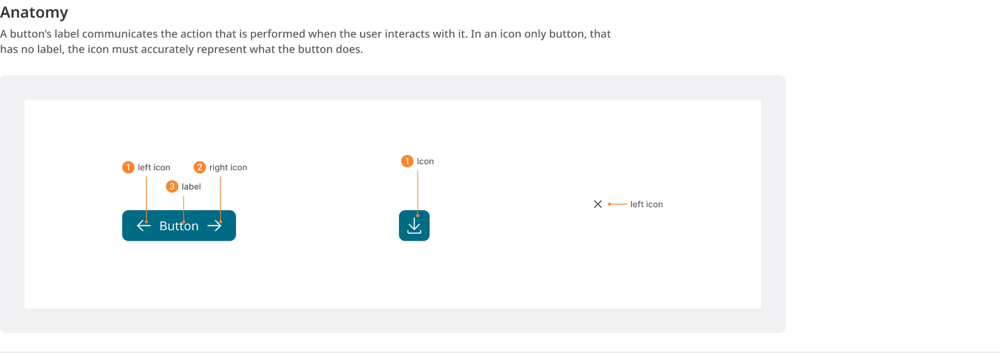
Anatomy: left icon, label, right icon; and the icon-only case.
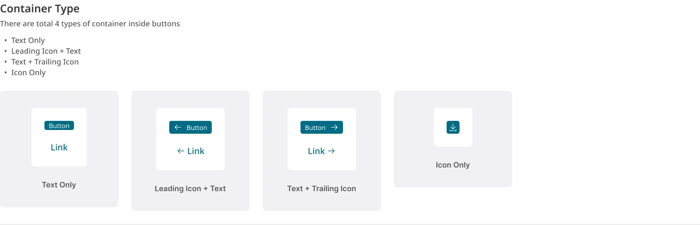
Four container types, shared by buttons and links.
Every variant, size and state becomes a prop with a type and a default, and every property in every state names the token it uses. Engineers never have to guess a value, and nobody hard-codes a hex.
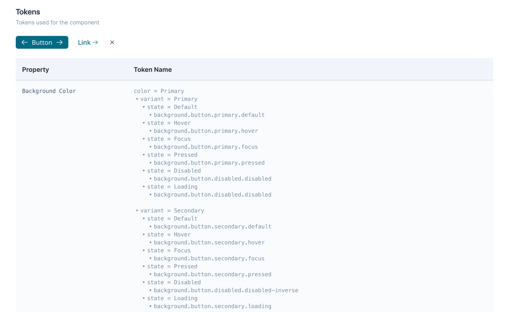
A token map page: every property, for every variant and state.
| Prop | Type | Values | What it does |
|---|---|---|---|
| variant* | string | PrimarySecondaryTertiarySubtleDanger | Sets the variant, and with it the action's level of importance |
| color* | string | PrimaryNegative | Sets the colour set; Negative is for destructive actions |
| state* | string | DefaultHoverFocusActive | Shows the current interaction state |
| size* | string | SmallMediumLarge | 24, 32 or 40px tall |
| label* | string | 1–2 words | Text describing the button's action |
| isDisabled | boolean | TrueFalse | Turns on the disabled state |
| isLoading | boolean | TrueFalse | Turns on the loading state |
| iconOnly | boolean | TrueFalse | Turns on the icon-only variant |
| leadingIcon | boolean | TrueFalse | Shows or hides the leading icon |
| trailingIcon | boolean | TrueFalse | Shows or hides the trailing icon |
| State | Background | Label |
|---|---|---|
| Primary | ||
| Default | background/ | text/ |
| Hover · focus · pressed | background/ | text/ |
| Disabled · loading | background/ | text/ |
| Secondary · plus a 1px border | ||
| Default | transparent · border/ | text/ |
| Hover · pressed | background/ | text/ |
| Disabled | background/ | text/ |
| Every variant, on focus | ||
| Focus ring | effects/ | unchanged |
When to use a component, when not to, and how to write for it, shown as do and don't examples so the rule isn't just a sentence nobody reads. The content doc covers label length, clarity, casing and how destructive actions are worded.
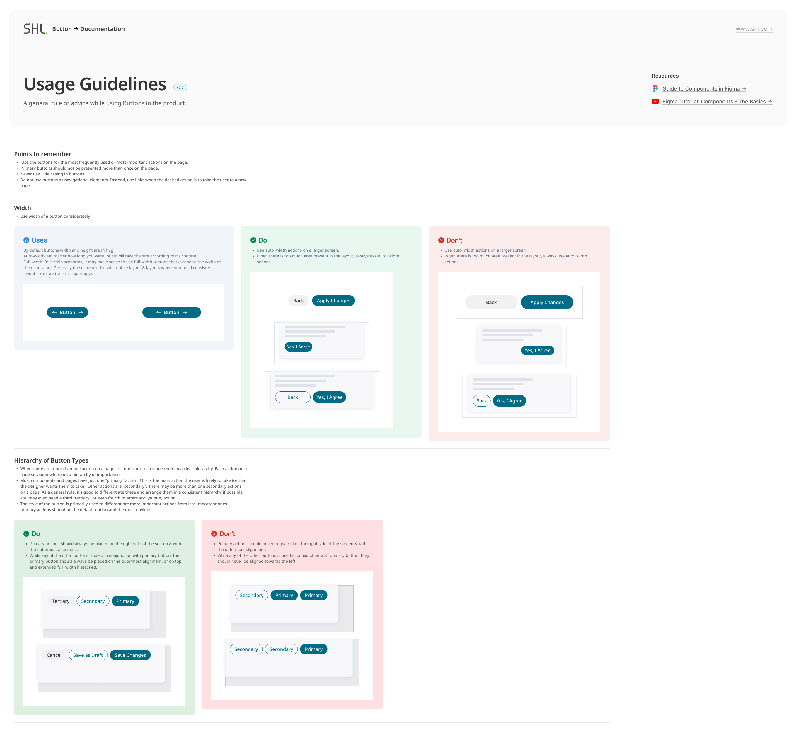
A usage guideline page: width, hierarchy and placement, each with a do and a don't.
Every accessibility doc answers the same questions, so engineers never have to infer behaviour.
aria-label="Download report".aria-busy.A spec like this is the easy 80%. The harder calls were picking one filter pattern that had to work whether a product exposed 3 facets or 30, and one table style that stayed legible from a 4-row summary card to a 900-row candidate list.
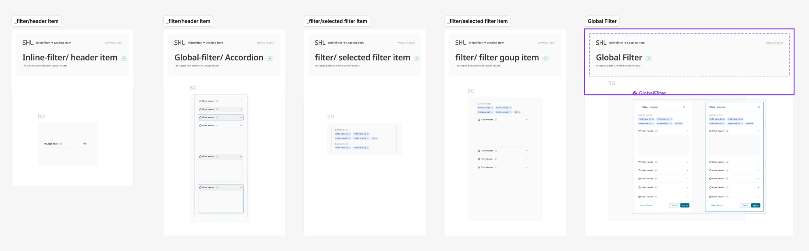
One filter pattern, built from documented parts: header item, accordion, selected and grouped filter items, assembled into the global filter.
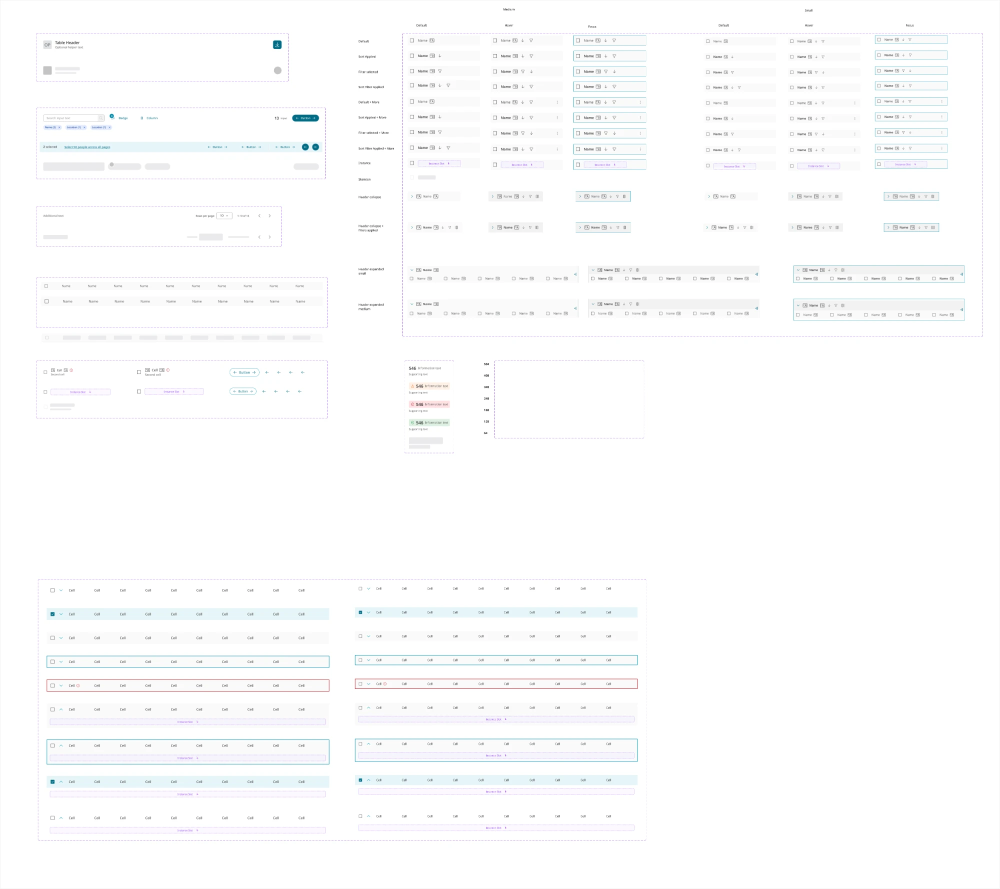
The data grid, element by element: header, toolbar, bulk actions, pagination, every column-header state in two densities, and every row state.
We didn't build the library first and the platform second. We built both at once.
Around five squads were building SHL's new talent mobility platform. Whenever a squad picked up a screen, the components it needed were shared out across the squads, built, and put through the same checks before anyone else could use them. The library grew exactly as fast as the product needed it.
A squad starts a platform screen and lists the components it needs.
Each missing component is assigned to a squad to design and build.
Design tests the build against the spec, and feedback goes back to whoever built it.
QA tests it, and the team checks how it's consumed in the application and what it affects.
Handed off as the main version and marked ✅ ready for dev in the library.
Every component lives twice: in the Figma library, owned by design, and in Spectra, the coded library in Storybook, owned by engineering. The review steps above were how we kept the two in step, and they're also where the gap between them first showed.
Components, variants and docs. What designers pull into every file.
The coded components, testable against the spec. What engineers build with and QA checks against.
A system decays when nobody can tell what's current. So the library itself carries the rules.
Ready for dev, work in progress or deprecated, visible in the page list itself, before anyone opens a frame.
A retired component, like the standalone Link, stays in the file, clearly marked deprecated, instead of silently disappearing from under the teams using it.
Changes are logged in the file, and each doc carries its version, from v1 to v2.0, so nobody builds from a stale spec.
The file includes a shared design-annotations page for handoff, and a playground page for trying components out.
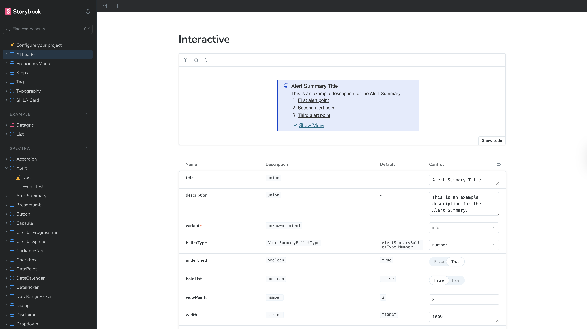
Storybook: the same component spec designers reviewed, rendered live for engineers to build and test against.
Before: every product its own visual language, its own rules.
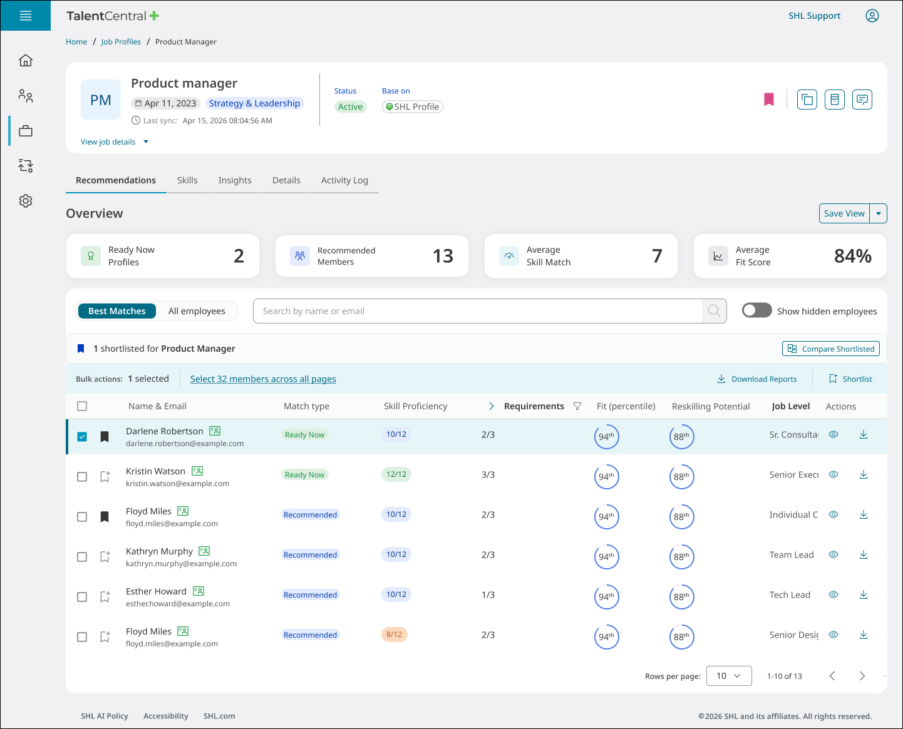
After: one token set and one component library, running live in TalentCentral+.
work delivered per sprint after adoption, as reported by delivery managers. A conservative figure, since the coded library still lags the design.
adopted it first, then it was rolled out company-wide
from start to core components ready for dev
in the design library: every colour pairing in the tokens clears 4.5:1
Beyond speed, the system built something harder to measure: trust. The same button, the same error state, the same filter, now behaving identically everywhere a recruiter or candidate meets it.
We set up ownership for the design library. We never agreed a matching owner for the code.
Design defined the foundations in full: tokens, states, motion and theming, all documented in the Figma library. The coded library, Spectra, was built squad by squad, and without shared ownership across design and engineering those foundations were never implemented centrally in code. Missing pieces were patched locally, and around 30 tickets were raised for component gaps alone. Every squad paid the same component tax, and the cost stayed invisible because it was spread across everyone's sprint.
So we're pitching a full V2: a governed foundation, not another UI refresh, adopted incrementally rather than in a big-bang migration. In the meantime we fix components one at a time, as tickets inside current sprints.
Components aren't consistently built as designed.
Tokens, states, motion and theming exist in Figma but aren't defined centrally in Spectra.
Teams edit components locally to unblock themselves.
The same component gaps become new dev work, again and again.
From the V2 proposal deck: why the current system isn't neutral. It keeps compounding inconsistency, accessibility gaps and delivery overhead.
A layered architecture, so change happens once at the right level instead of in every product.
Variables, tokens, motion, type, spacing
Button, Link, Icon, Text, Tag
Input, Select, Menu, Tooltip
Card, Modal, Drawer, Table
Product-ready usage guidance
The rollout has to reduce disruption while making the most painful components reliable, accessible and reusable. So not every component gets touched.
Audit current components with engineering; confirm the affected set.
Lock tokens, variables, motion, accessibility and Storybook docs.
Fix the components with the most reuse and recurring issues.
Adoption rules, a QA checklist, versioning and a contribution model.
The ask: approve a phased V2 programme, not a forced rewrite, owned jointly by design and engineering, with an engineering representative who has a veto over what enters the system. Design and code governed together, instead of reconciled after the fact.
The audit turned “it feels inconsistent” into 21 of 117. That number did more for buy-in than any mock-up.
Carbon and MUI were the single biggest accelerant to quality and delivery speed.
Growing the library with the product kept it grounded in real screens. But five squads contributing means five interpretations, unless someone owns the whole.
Agree joint design and engineering ownership before the first component, not after the fiftieth. Status markers and review steps help, but only if someone on each side can say no.
Consistency is what builds trust: internally between teams, and externally for whoever uses what we ship. More than a component library, the system became the foundation the rest of SHL's Talent Intelligence platform builds on.